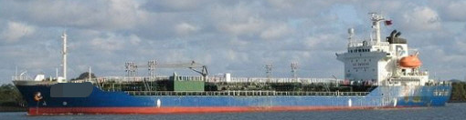

11,676 DWT 6,268 GRT Oil Chemical Tanker Blt 1997 Jp
/ informed by BNC SHIPBROKING CO., LTD.
(18-666)

- BUILT : MAR. 10, 1997, FUKUOKA SHIPBUILDING CO., LTD. JAPAN
- FLAG/CLASS : PANAMA / NK, NS MNS
- LOA/LBP/B/D : 117.00 / 110.00 / 20.02 / 11.20 m
- DWT/draft : 11,676 T / 8.766 m
- GRT/NRT : 6,268 / 3,549 T
- MAIN ENGINE : AKASAKA DIESELS 3,603 KW X 210 RPM X 1set
- CARGO PUMP CAPACITY : CENTRIFUGAL TYPE, 250 m³ or 200 m³ X 20set
- BALLAST PUMP : CENTRIFUGAL TYPE, 200 m³/hr X 2set
- FO TYPE : IFO380CST FOR M/E, MDO FOR G/E
- CARGO TANK CAPACITY : 12,543 m³, SUS316L
- HEATING COIL : STAINLESS STEEL
- HULL/BOTTOM : DOUBLE / DOUBLE
- OTHER TANK CAPACITY : FO 810, FW 399, WB 3,316, DO 102.88 m³
- LAST/NEXT SS : MAR. 11, 2017 / MAR. 9, 2022
- LAST/NEXT DD : MAR. 11, 2017 / MAR. 10, 2020
- LOCATION : TRADING IN ASIA RANGE
- DELIVERY : AROUND OCT., 2018 AT SINGAPORE – JAPAN RANGE
Information History
- 180827 : She is available for sale.